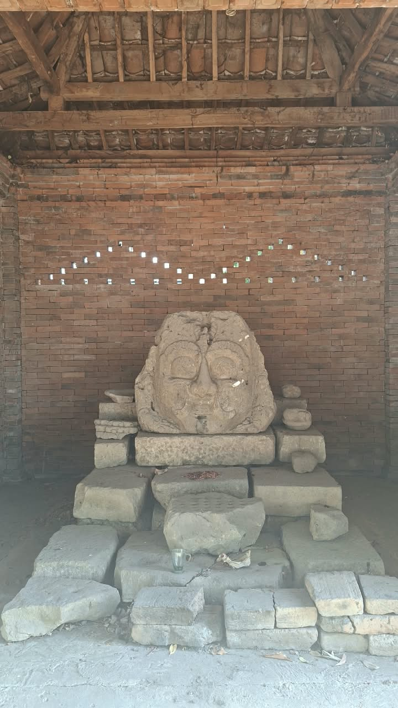

Galeri Dokumentasi & Restorasi Lapangan Beji Sirah Keteng
Kompilasi multi-spektrum visual autentik hasil penelitian lapangan tim MAN 2 Ponorogo di Dukuh Krajan, Desa Bedingin, Kecamatan Sambit, Kabupaten Ponorogo. Menghadirkan dokumentasi makro pahatan monolit Kalamakara, tata hidrologi mata air sendang, rona bentang alam, serta interaksi etnografi bersama sesepuh (Pak Jarno / Kamituwa) dan masyarakat pelindung situs.
SOROTAN ARSIP UTAMA • DOKUMENTASI LAPANGAN TERPILIH

Relief Kepala Raksasa Kalamakara

Kolam Petirtaan & Akuifer Mata Air

Penggalian Babad & Tutur Lisan Desa Bedingin
.jpeg)
Persawahan Terasering Kaki Gunung Wilis
SEMUA ARSIP DOKUMENTASI (38 FOTO & 2 VIDEO)
Rekaman Video Lapangan Dokumenter
2 Berkas MP4Dinamika Aliran Kejernihan Air Sendang Sirah Keteng
Rekaman langsung dinamika semburan mata air sendang Beji Sirah Keteng yang jernih, mengalir terus menerus dari celah akuifer batuan andesit purba.
Dokumentasi Eksplorasi Tapak Situs & Lingkungan Alami
Dokumentasi visual lingkungan situs, cungkup pelindung kepala monolit, serta interaksi spasial antara mata air dengan lanskap persawahan di sekitarnya.
Akses Laporan Riset & Pengajuan Data Mentah
Seluruh berkas dokumentasi, fotogrametri mentah, dan transkrip tradisi lisan dapat diakses publik demi keterbukaan sains budaya dan pendidikan cagar budaya berkelanjutan.
Laporan Hasil Dokumentasi & Analisis Lapangan (PDF)
Bundel laporan komprehensif berisi ortofoto resolusi tinggi, perbandingan relief Kalamakara, transkrip 3 versi tradisi lisan, dan analisis hidrologi sendang.
Kredit Tim Peneliti & Kurator Lapangan
- Annisa Tri Yulianti
- Auliya Fathiyyatul Maghfiroh
- Ilham Rofi Anugrah
Wiretno, S.Hum, Gr
Reno Prasnianggara Al Risky
Pengajuan Izin Riset & Data Mentah 3D
Bagi akademisi, arkeolog, dan mahasiswa yang membutuhkan data koordinat mentah, fotogrametri laser, atau file 3D mesh GLB/OBJ.
Draf permohonan resmi telah disiapkan menuju humas@man2ponorogo.sch.id. Jika aplikasi email tidak terbuka otomatis, silakan salin teks di bawah:
Kembali ke Pengantar 3D / Selesai Penjelajahan
Kembali ke beranda untuk mengulang eksplorasi visual atau beralih ke bab pameran lainnya.